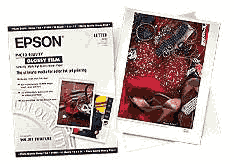
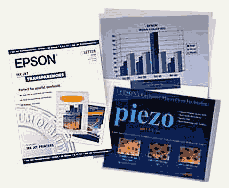
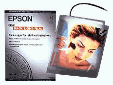
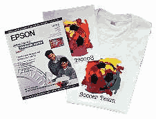
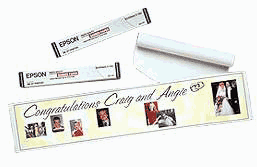
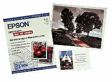
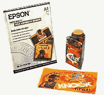
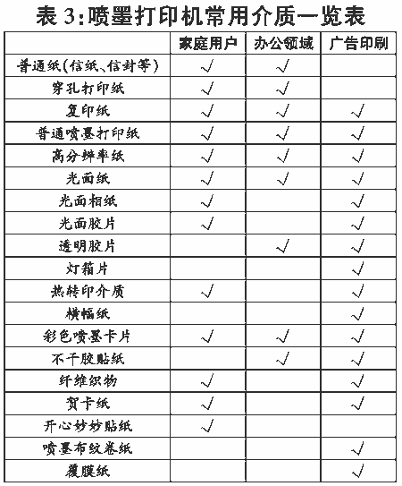

●喷墨打印机
喷墨打印机能够使用的打印介质种类最为丰富，每个出售喷墨打印机耗材的商店中都陈列有各种琳琅满目的介质样品，这主要得益于喷墨打印机使用的是非接触性输出技术，只要纸张能够顺利通过走纸机构，便可以用作喷墨打印机的输出介质。
就像喷墨打印机最好配用生产厂商自己生产的墨水盒一样，在选购喷墨打印机的专用介质尤其是高档介质时，也最好使用喷墨打印机生产厂商自己的产品，因为各个厂商生产的墨水都有自己独特的配方，为了提高打印质量，它们在部分专用介质产品中使用了适合自己墨水的技术，如果混用不同厂商的专用介质，则可能达不到预期的打印效果。爱普生、佳能和惠普是目前国内喷墨打印机市场上销售量最大的三家厂商，它们各自都推出了一系列的专用介质产品，这些产品大致可以分为下面的几大类别。
普通喷墨打印纸是喷墨打印机的最低档打印介质，它的表面有一层很薄的涂层，两面均可以打印，其打印效果比使用复印纸要好一些，其价格是喷墨打印机专用介质中最便宜的，适用于对质量要求较高的文档打印和简单的图形打印。典型产品有爱普生的360DPI喷墨打印纸S041059，佳能的彩色喷墨普通纸LC－301，惠普的亮白喷墨打印纸C5976A等，其中佳能的产品还具有防水的特点，适合于多雨和气候潮湿的地方。所有的喷墨打印机都可以使用普通喷墨打印纸，其常见的尺寸规格有A2、A3和A4等。
高分辨率纸的涂层比普通喷墨打印纸要稍厚一些，表面更加平整，因此打印效果也要好一些，可以用来打印图文并茂的报告和简单的图像，这种纸张还不能达到照片品质的输出效果，因此不适合打印质量要求较高的图像文件。典型产品有爱普生的高品质720DPI喷墨打印纸S041117，佳能的高分辨率纸HR－101，惠普的高级喷墨打印纸51634Y等，常见的尺寸规格有A3和A4两种。
爱普生还有一种照片质量720DPI喷墨打印纸(S041061)，这种纸不含酸性物质，有涂层的一面呈现亮白色，并且十分平滑，另一面平整无光泽，它的光滑面可以用来打印精美的图片、报表，效果接近照片品质。另外，它虽然是720DPI分辨率的打印纸，但也可以用在1440DPI的打印机上，可以作为照片品质打印的入门级产品。
光面纸（Glossy
Paper）的涂层较厚，其表面非常光滑并且有光泽，使用光面纸打印出来的图像色彩准确生动，饱合度高，其照片输出效果比高分辨率纸要好得多，接近照片品质。光面纸的典型产品有爱普生的照片质量光面纸S041126、佳能的GP－101、惠普的高级相片纸C6039A等，常见的尺寸规格有A2、A3和A4三种。
光面相纸（Glossy Photo Paper）是专门为打印照片而设计的介质，它比一般光面纸要厚一些，表面呈现出带光泽的亮白色，非常光滑，打印出现的色彩鲜艳生动，其图像输出效果达到了照片品质，可以用来打印照片、贺卡和圣诞卡，特别是用于制作家庭或个人相集，对图像质量要求较高的广告制作也可以选用这种介质。光面相纸的典型产品有爱普生的S041140、佳能的GP－201、惠普的豪华相纸C6057A等，常见的尺寸规格有A3、A4等。
光面胶片（Glossy Film）是一种带有白色涂层的塑料胶片，与上面几种照片质量的打印介质相比，它的表面更加平滑光亮，其打印效果非常优秀，图像逼真传神，是最适合于打印照片的介质，可用于制作高品质的广告和高档家庭相册，但缺点是它的价格非常昂贵，大大增加了打印成本。光面胶片的典型产品有爱普生的照片质量光面胶片S041071（见图1）、佳能的高光胶片HG－201等，常见的尺寸规格有A3和A4等。
透明胶片（Transparency Film）是一种特殊的透明塑料胶片，它可以用来制作彩色幻灯片或透明覆盖层，打印出来的图表和图形比较精美、色彩生动，不过它所能达到的分辨率并不太高。典型的透明胶片产品有爱普生的S041063（见图2）、佳能的CF－102、惠普的C3828A等，另外惠普还有一种快干型的透明胶片C6051A，透明胶片常见的的尺寸规格为A4。

灯箱片（Back Light Film）的材质也是一种塑料胶片，但它不像透明胶片那样是透光的，如果把灯光从其背后照射过来，那么灯光将被柔化，整块胶片呈现出一种乳白色的效果，这种能够柔化灯光的特性一方面保护灯箱片上打印的图像不被强光直接照射，另一方面还使得图像的效果显得非常柔和。灯箱片主要用于广告制作，例如制作灯箱广告、展示品等，另外它还可以用来设计成书皮或影集等。利用喷墨打印机来制作的灯箱广告可以达到较高的分辨率，但由于受到打印机幅面大小的限制，在制作大型灯箱广告时可能需要拼接多块灯箱片，或者改用大幅面的喷绘机。灯箱片的典型产品有爱普生的S041130（见图3）、佳能的BF－102等，常见的尺寸规格有A2、A3和A4三种。
热转印介质比较特殊，它的表面涂有一层特殊的物质，受热后具有一定的粘度，使用时首先用它打印成反字反像，然后利用熨斗把热转印介质上的图案烫印到棉/混纺织物上，用户还可以使用热转印介质来制作个性化的T恤衫或制作团体制服，还可以把自己设计的图案转印到桌布、枕套或围裙等多种类型的物品上。事实上，热转印技术应用得相当广泛，除了喷墨打印机使用的热转印介质外，一些耗材厂商还生产有供彩色激光打印机、复印机使用的热转印介质，不过国内比较少见。热转印介质的典型产品有爱普生的S041153（见图4）、佳能的TR－101、惠普的C6049A等，价格都比较高。在实际应用中发现，使用爱普生的热转印产品制作的T恤衫不仅图案质量更好，而且相对要更加耐洗一些，佳能次之，惠普要稍差一些，这主要是墨水配方不同造成的区别。
横幅纸（Banner Paper）一般以卷的形式来包装，可用于制作各种中小型的条幅和标语，横幅纸的纸质可以是普通喷墨打印纸，也可以是照片质量的打印纸，用户可根据不同应用的需求来选择。由于最终输出件的长度可能相当长，所以横幅纸一般都用在支持连续打印的喷墨打印机上。典型产品有爱普生的S041102（见图5）、佳能的横幅纸等。
彩色喷墨卡片相当于特殊尺寸的加厚型喷墨打印纸，其纸质也分为普通型、光面型等等，可满足不同场合的需求。卡片一般用来打印贺卡、请柬、通知等，典型的产品有爱普生的S041122（见图6）、佳能的FM－101、惠普的C1812A等，惠普还提供有一系列不同主题的卡片，用户可以选择自己喜爱的主题来制作个性化贺卡。
不干胶贴纸也是喷墨打印机常用的一种介质，使用它可以把打印出来的图片粘贴到其它物品之上，适合于打印各种标签、小型包装等，除了S041106（见图7）等型号的产品外，爱普生还专门为家庭用户推出了一种开心妙妙贴纸，受到了用户的好评。
佳能有一种专供喷墨打印机使用的纤维织物（FS－101）产品，它是一种带有一层可以撕掉的塑料保护膜的棉织物，用户可以把自己设计的图案或扫描得到的照片图像打印到这种棉织物上，然后便可制作个性化的枕巾或灯罩等小型棉织品。
除了上面介绍的十几种专用介质外，还有一些不太常用的介质，例如喷墨布纹卷纸、覆膜纸、加厚型喷墨打印纸等等。
需要注意的是，尽管市场上有这么多种打印介质可供喷墨打印机用户选择，但是其中一些介质并非对每种型号的打印机都适用，例如有的介质要求打印机具有连续打印的功能，另一方面，如果打印机本身的分辨率很低，即使选择高档介质也不会得到满意的输出效果，因此用户应参照打印机的功能说明书和规格表，根据实际要求来选购合适的打印介质。喷墨打印机在不同领域的常用介质见表3。
(四川 王琰)
|